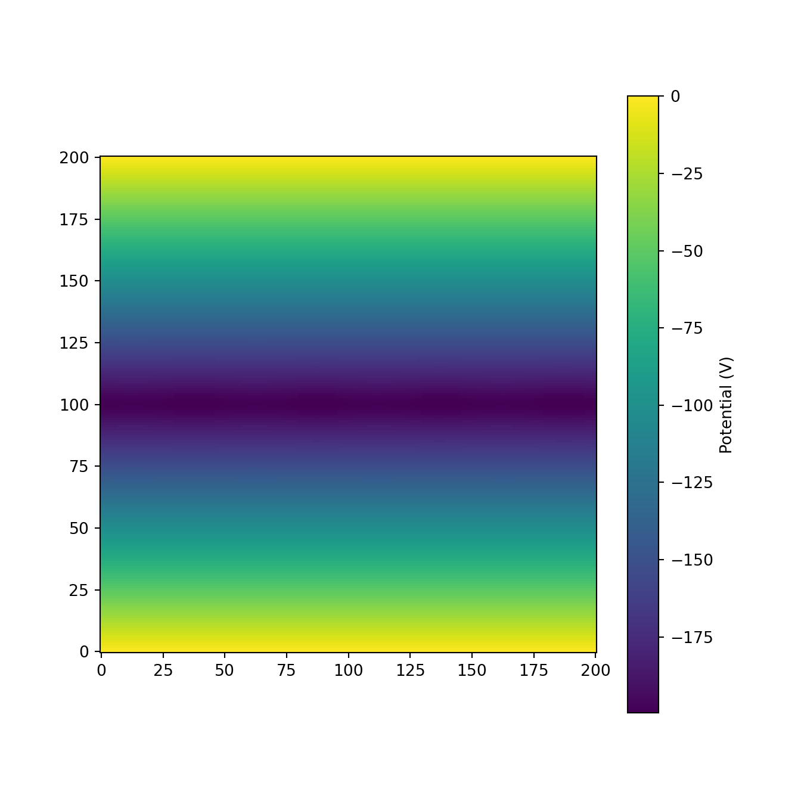
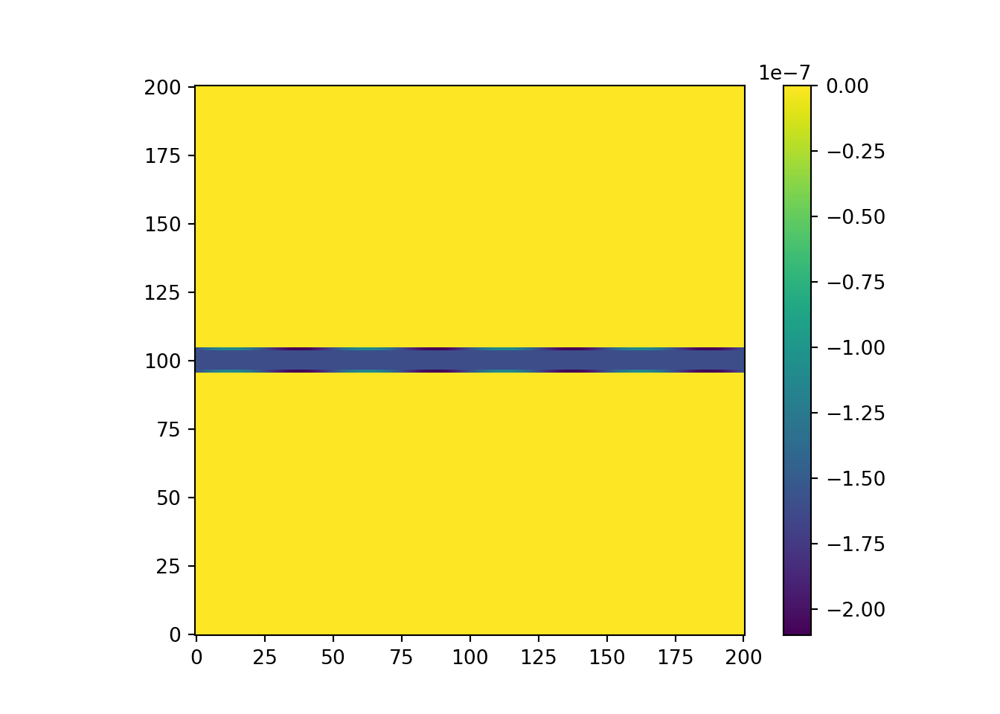
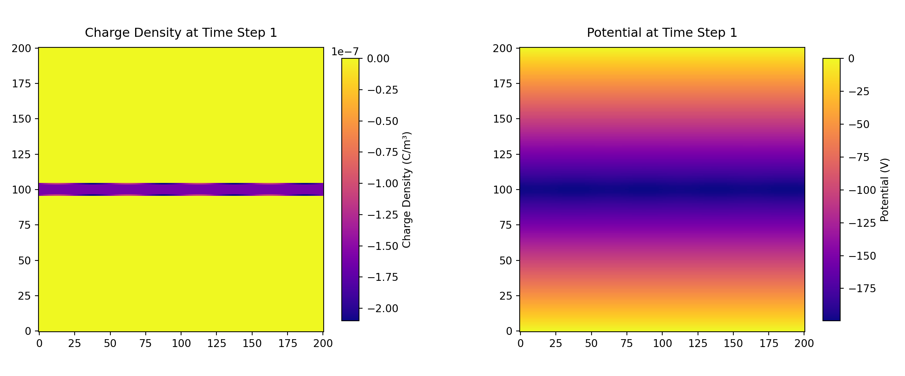
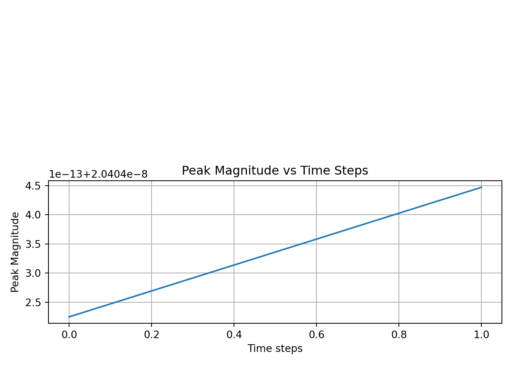
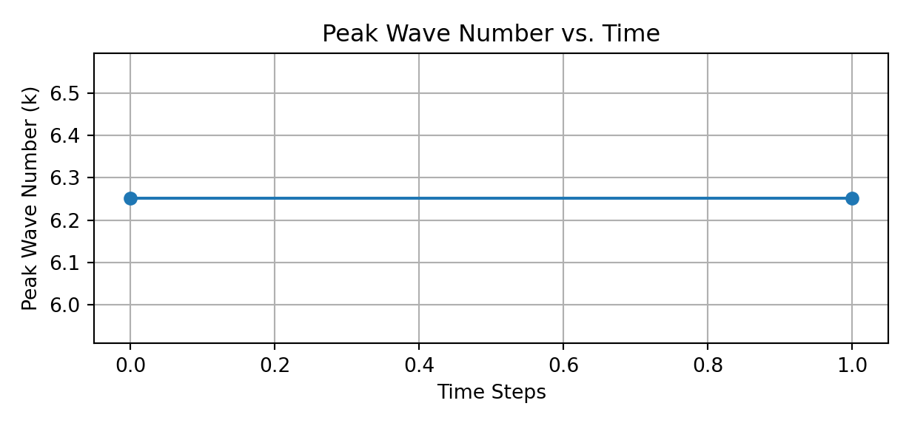
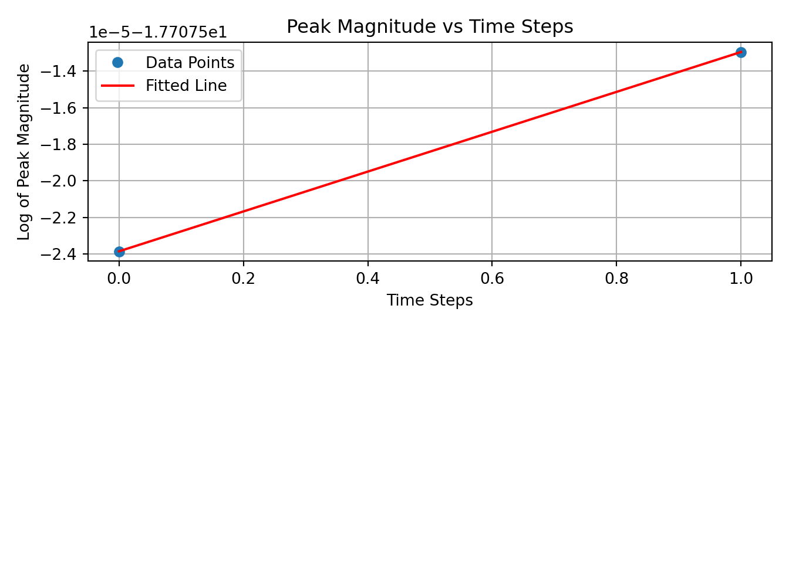

from scipy.integrate import odeint
from scipy.sparse import diags
from scipy.sparse.linalg import spsolve
from matplotlib import pyplot as plt, cm
from mpl_toolkits.mplot3d import Axes3D
from scipy.integrate import solve_ivp
import numpy as np
from matplotlib.animation import FuncAnimation
import sys
#import jax.numpy as jnpPhysics Capstone
Modeling Diocotron Instability in Electron Plasma
Overview
I developed a two-dimensional fluid simulation to study the diocotron instability of a cold, pure electron plasma slab confined between conducting boundaries. The equations of motion for the plasma in this case are isomorphic to the 2D Euler equations for incompressible fluids, and the plasma’s flow velocity is dominated by the E × B drift. Introducing sinusoidal perturbation waves on the slab’s surfaces, I analyze the growth rate of the perturbation waves in the linear regime for different plasma thicknesses and perturbation wavelengths. The simulation results suggest that a thicker slab and a shorter perturbation wavelength lead to a more stable configuration in which the plasma does not evolve into vortices. The instability peak shifts upward and to the left as the mode increases, but distinct modes with different perturbed wavelengths share the same stability threshold.
Below is the workflow for the simulation in Python:
Install required packages
Set up the grid parameters
I discretize the \(x − y\) plane with a \(200 × 200\) grid of physical size \(1 m × 1 m\). The magnetic field \(\mathbf{B}\) points out of the page in the positive \(z\)-direction. The plasma with a uniform number density of \(10^{12}\) particles per \(m^3\) is initialized in the center of the grid. The simulation implements periodic boundary conditions along the x-axis and conducting boundary conditions at \(y = 0 m\) and \(y = 1 m\).
#set up grid of size 200 by 200
nx,ny = 200,200
x = np.linspace(0, nx, nx + 1)
y = np.linspace(0, ny, ny + 1)
X, Y = np.meshgrid(x, y)
L = 1 # the length of the box is 1m
delta = L/nx
epsilon = 8.85e-12 #F/m
# magnetic field
B = 0.1 #TeslaFunctions for the simulation:
Under these conditions, the equations of motion for the electron plasma are isomorphic to the 2D Euler equations for incompressible fluids. This treatment of the plasma as a single conducting and charged fluid replaces the individual particles’ velocities with the fluid’s collective flow velocity \(u\). \(\mathbf{E}\) and \(\mathbf{B}\) represent the electric field of the plasma’s own space charge and the constant external magnetic field pointing in the positive z-direction. We have 3 equations that we need to solve: the Poisson’s equation, the fluid equation of motion, and the continuity equation, respectively.
There are iterative methods such as the Jacobi relaxation, the Gauss-Seidel, and the Successive Over- Relaxation (SOR) methods that solve the Poisson’s equation at each grid point during the current time step using numerical values of the potentials from the previous time step until the algorithm finds a stable solution that converges. A faster alternative is the matrix inversion method that places the system of equations in the form of \(Ax′ = b\). Here, \(A\) is a sparse \(39, 600 × 39, 600\) coefficient matrix representing the linear relationship between the potentials across the grid, excluding 400 grid points on the top and bottom boundaries whose potentials stay fixed at 0; \(x\) is a \(39, 600 × 1\) vector of the unknown potentials; \(b\) is the charge densities vector . To solve for \(x\), the algorithm performs a matrix multiplication between the inverse of \(A\) and \(b\) \((x = A−1b)\).
# including periodic side boundary
# https://my.ece.utah.edu/~ece6340/LECTURES/Feb1/Nagel%202012%20-%20Solving%20the%20Generalized%20Poisson%20Equation%20using%20FDM.pdf
# Matrix inversion method: efficient Poisson's solver
# set up the coefficient matrix
def create_A(nx, ny):
num_diag = (nx+1)*(ny-1)
diag = np.full(num_diag, -4)
lower = np.full((num_diag-1),1)
upper = np.full((num_diag-1),1)
identity = np.full(num_diag-(nx-1),1)
side = np.full(ny-1,1)
lower[nx-2::nx-1] = 0
upper[nx-2::nx-1] = 0
diagonal = [diag,lower,upper,identity,identity,side,side]
offsets = [0,-1,1,-(nx-1),(nx-1),-nx*(ny-1),nx*(ny-1)]
return diags(diagonal, offsets, shape =(num_diag, num_diag), format= 'csr')
# construct boundary charge density vector B
def create_B(rho):
lil_B2 = np.zeros(((nx+1)*(ny-1),1),float)
f = rho[1:nx,0:ny+1].reshape((nx+1)*(ny-1),1,order = 'F')*delta**2*(-1)/epsilon
lil_B2[0:(nx+1)*(ny-1):(ny-1)] = -rho[0,0:nx+1].reshape((ny+1),1)
lil_B2[ny-2:(nx+1)*(ny-1):(ny-1)] = -rho[ny,0:nx+1].reshape(ny+1,1)
return f
# solve for x in Ax=B
def solve_poisson_1(rho):
phi = np.zeros([nx+1,ny+1],float)
A = create_A(nx,ny)
B = create_B(rho)
phi_flat = phi.flatten(order= 'F')
phi_flat= spsolve(A,B)
phi[1:nx,0:ny+1] = phi_flat.reshape(nx-1,ny+1,order = 'F')
return phi
# solve for Electric field from the calculated potential using finite differencing method
def electric_field(phi):
Ex = np.zeros([nx+1, ny+1], float)
Ey = np.zeros([nx+1, ny+1], float)
for i in range(1, nx):
for j in range(1, ny):
#Gemini pointed out how 2D-array indexing works as below:
#row of an array is 'i' (y-direction)
#column of an array is 'j' (x-direction)
Ex[i, j] = -(phi[i, j + 1] - phi[i, j - 1]) / (2*delta)
Ey[i, j] = -(phi[i + 1, j] - phi[i - 1, j]) / (2*delta)
plt.show()
return Ex, Ey
# the velocity is from ExB
def velocity(Ex, Ey, B):
vx = np.zeros([nx+1, ny+1], float)
vy = np.zeros([nx+1, ny+1], float)
for i in range(1, nx):
for j in range(1, ny):
vx[i, j] = Ey[i, j] / B
vy[i, j] = -Ex[i, j] / B
return vx, vy
#forward Euler method to 1st degree
def forward_euler_charge_density(rho, vx, vy, dt):
#rho_new_time = rho.copy()
for n in range(1):
rho_new_time = rho.copy()
for i in range(1, nx):
for j in range(1, ny):
rho[i, j] = rho[i, j] - dt *( (rho_new_time[i +1, j] - rho_new_time[i - 1, j] )* vy[i, j] / (2*delta) +
(rho_new_time[i, j+1] - rho_new_time[i, j - 1] ) * vx[i, j]/ (2*delta) )
rho[0,:] = 0
rho[nx,:]=0
return rho
# solve the continuity equation using forward in time, centered in space Euler method
def solve_continuity(rho, vx, vy, dt):
for n in range (1):
rho_new = rho.copy()
for i in range (1,nx):
for j in range (ny+1):
#Gemini helped me debug the indexing issue (out of bounds): keep grounding boundaries fixed and updating the sides only by wrapping around
#Google how negative indexing works in Python
rho[i,j] = rho_new[i,j] - dt*( (rho_new[i+1,j]-rho_new[i-1,j])*vy[i,j]/(2*delta) +
(rho_new[i,(j+1)%(ny+1)]-rho_new[i,(j-1)%(ny+1)])*vx[i,j]/(2*delta) )
rho[0,:] = 0
rho[nx,:]=0
return rho# Runge-Kutte to the 4th order, more computationally accurate
def charge_density_ode(t, rho_flat, vx, vy, nx, ny, delta):
rho= rho_flat.reshape((nx+1, ny+1), order= 'F')
dndt = np.zeros_like(rho)
for i in range(1, nx):
for j in range(0, ny+1):
dndt[i, j] = - ( (rho[i + 1, j] - rho[i - 1, j] ) * vy[i , j]/ (2 * delta) +
(rho[i, (j+1)%(ny+1)] - rho[i, (j-1)%(ny+1)] ) * vx[i, j ]/ (2 * delta) )
return dndt.flatten(order= 'F')
def solve_rho_ode(vx,vy,rho,dt, nx,ny, delta):
time_span = (0.0, dt)
rho_0 = rho.flatten(order= 'F')
sol = solve_ivp(charge_density_ode, time_span, rho_0, method='RK45', args=(vx, vy, nx, ny, delta))
rho_new = sol.y[:,-1]
return rho_new.reshape(nx+1, ny+1, order= 'F')A potential plot of the initiated slab
import warnings
warnings.filterwarnings("ignore", category=FutureWarning)
# A potential plot for a slab with half a thickness = 4 grid squares
rho = np.zeros([nx+1,ny+1],float)
rho[96:105,:]= -1e12* (1.6e-19)
rho[104,:] += 0.5e-7 *np.sin(0.126*x)
rho[96,:] += 0.5e-7 *np.sin(0.126*x)
fig, ax = plt.subplots(figsize=(7, 7))
phi = solve_poisson_1(rho)
plt.imshow(phi, origin = 'lower')
plt.colorbar(label="Potential (V)",shrink=1)plt.show()
Run the simulation
I then run the simulaton and save the frame of the simulations at each time step to create a gif animation. I also save the potential and the charge density data in an npz file for data analysis at the next step.
# Demo for the simulation, so I only ran 1 step
# To see the evolution, run 100,000 steps
rho = np.zeros([nx+1,ny+1],float)
rho[96:105,:]= -1e12* (1.6e-19)
rho[104,:] += 0.5e-7 *np.sin(0.126*x)
rho[96,:] += 0.5e-7 *np.sin(0.126*x)
dt = 5e-10
history = []
file_save = {}
frame_interval = 1
time_intervals = np.linspace(0, dt, 1)
plt.imshow(rho, origin = 'lower')
plt.colorbar()<matplotlib.colorbar.Colorbar object at 0x77d35b816710>step = 2 # how many frames
for i in range (step):
phi = solve_poisson_1(rho)
Ex, Ey = electric_field(phi)
vx, vy = velocity(Ex, Ey, B)
rho_new = solve_rho_ode(vx,vy,rho,dt, nx, ny, delta)
rho = rho_new
if i % frame_interval == 0:
print(f"Time step {i}")
print(f"Total charge = {np.sum(rho)}")
history.append((rho.copy(), phi.copy(),i))
file_save[f"time_step_{i}"] = (rho.copy(), phi.copy())
np.savez('/cloud/project/research/example_run', **file_save) # save the data in an npz file<string>:20: FutureWarning: Input has data type int64, but the output has been cast to float64. In the future, the output data type will match the input. To avoid this warning, set the `dtype` parameter to `None` to have the output dtype match the input, or set it to the desired output data type.
Time step 0
Total charge = -0.00028943484751186476
Time step 1
Total charge = -0.00028943484751187696
print("Simulation saved.")Simulation saved.rho_initial, phi_initial, i = history[0]
fig = plt.figure(figsize=(12, 5))
# plot the potential and density plots side by side
ax1 = fig.add_subplot(1, 2, 1)
plot_1 = ax1.imshow(rho_initial, origin='lower', cmap='plasma')
plot_1_title = ax1.set_title(f"Charge Density at Time Step {i}", pad=10)
fig.colorbar(plot_1, ax=ax1, label='Charge Density (C/m³)', shrink=0.75, aspect=15)<matplotlib.colorbar.Colorbar object at 0x77d35b8fb250>ax2 = fig.add_subplot(1, 2, 2)
plot_2 = ax2.imshow(phi_initial, origin='lower', cmap='plasma')
plot_2_title = ax2.set_title(f"Potential at Time Step {i}", pad=10)
fig.colorbar(plot_2, ax=ax2, label='Potential (V)', shrink=0.75, aspect=15)<matplotlib.colorbar.Colorbar object at 0x77d35b779bd0>plt.tight_layout()
plt.subplots_adjust(wspace=0.35) # Increase this number (e.g., 0.4 or 0.5) if want more space
def update(frame):
rho_data, phi_data, step_num = history[frame]
plot_1.set_data(rho_data)
plot_2.set_data(phi_data)
plot_1.set_clim(np.min(rho_data), np.max(rho_data))
plot_2.set_clim(np.min(phi_data), np.max(phi_data))
plot_1_title.set_text(f"Charge Density at Time Step {step_num}")
plot_2_title.set_text(f"Potential at Time Step {step_num}")
return plot_1, plot_2
ani = FuncAnimation(fig, update, frames=len(history), blit=True, interval=200)
print("Saving animation... This may take a moment.")Saving animation... This may take a moment.ani.save('/cloud/project/research/example_run.gif', writer='pillow', fps=5) # save the frames to create the animation gif
plt.show()
Data analysis of perturbation growth rate
Here, to analyze the simulation more closely, I compute the growth rate of the perturbation waves at the slab’s top surface in the linear regime for different plasma thicknesses and perturbation wavelengths. During the early time steps, before the slab exhibits the non-linear behavior of diocotron mode through the formation of vortices, the growth rate of the instability is expected to grow exponentially. This regime is also where analytical models lie within
#https://numpy.org/doc/2.3/reference/generated/numpy.fft.fft.html
def fft_rho_slice(rho_slice):
N = len(rho_slice)
rho_fft = np.fft.fft(rho_slice)
freq = np.fft.fftfreq(N, d=delta)
magnitude = np.abs(rho_fft)
wave_number = freq * 2 * np.pi # Convert frequency to wave number
return wave_number[:N // 2], magnitude[:N // 2] # Return only positive frequencies
def find_peaks(rho_slice):
wave_number, magnitude = fft_rho_slice(rho_slice)
#positve_k = (wave_number > 10) & (wave_number < 20)
positve_k = (wave_number <10) & (wave_number > 0)
peak_wave_number = np.argmax(magnitude[positve_k])
#print(f"Peak wave number: {fft_rho_slice(rho_slice)[0][positve_k][peak_wave_number]}")
#print(f"Peak magnitude: {fft_rho_slice(rho_slice)[1][positve_k][peak_wave_number]}")
return wave_number[positve_k][peak_wave_number], magnitude[positve_k][peak_wave_number]
list_wave_number = []
list_magnitude = []
list_time_steps = []
frame_interval = 1
load_data = np.load("/cloud/project/research/example_run.npz", allow_pickle=True)
#select a slice in the grid and analyze it within a time range
#save its peak wave number and peak magnitude over time in an array
for i in range(0,2):
if i % frame_interval == 0:
file_save_at_time_i = load_data[f"time_step_{i}"]
rho_at_i = file_save_at_time_i[0]
phi_at_i = file_save_at_time_i[1]
rho_slice = rho_at_i[104,:]
wave_number, magnitude = fft_rho_slice(rho_slice)
list_wave_number.append(find_peaks(rho_slice)[0])
list_magnitude.append(find_peaks(rho_slice)[1])
list_time_steps.append(i)
#take the log of magnitude for linear fitting
log_magnitude = np.log(np.array(list_magnitude))
log_square = np.log(np.array(list_magnitude)**2)
square_root_time_steps = np.sqrt(np.array(list_time_steps))
log_time_steps = np.log(np.array(list_time_steps)+1) # Adding 1 to avoid log(0)
#plot original peak magnitude vs time steps
plt.subplot(2, 1, 2)
plt.yscale('linear') # Set the y-axis to a logarithmic scale
#plt.plot(fft_rho_slice(rho_slice)[0], fft_rho_slice(rho_slice)[1])
plt.plot(list_time_steps, list_magnitude)
plt.title('Peak Magnitude vs Time Steps')
plt.xlabel('Time steps')
plt.ylabel('Peak Magnitude')
plt.grid(True)
plt.tight_layout()
plt.show()
#linear fit log(magnitude) vs time steps
#plot log(magnitude) vs time steps and do linear fit
a,b= np.polyfit((list_time_steps), log_magnitude, 1)
y = a * (np.array(list_time_steps) )+b
#y = np.exp(a * (np.array(list_time_steps) )+b)
plt.subplot(2, 1, 1)
plt.plot(list_time_steps, log_magnitude, 'o', label='Data Points')
plt.plot(list_time_steps, y, 'r-', label='Fitted Line')
plt.title('Peak Magnitude vs Time Steps')
plt.xlabel('Time Steps')
plt.ylabel('Log of Peak Magnitude')
plt.legend()
plt.grid(True)
plt.tight_layout()
#plt.ylim(0, max(list_magnitude)*1.1)
print(f"Slope: {a}, Intercept: {b}")Slope: 1.0888748653185553e-05, Intercept: -17.707523850088492#track peak wave number over time
plt.figure(figsize=(6.4, 3))
plt.plot(list_time_steps, list_wave_number, 'o-')
plt.xlabel('Time Steps')
plt.ylabel('Peak Wave Number (k)')
plt.title('Peak Wave Number vs. Time')
plt.grid(True)
plt.tight_layout()
plt.show()

Conclusion
Some conclusions that I were able to draw from my simulation and data analysis were:
A thicker slab is more stable under diocotron instability.
A slab exposed to a shorter perturbation is also more stable.
For a full documentation of the project, please visit Diocotron Instability.